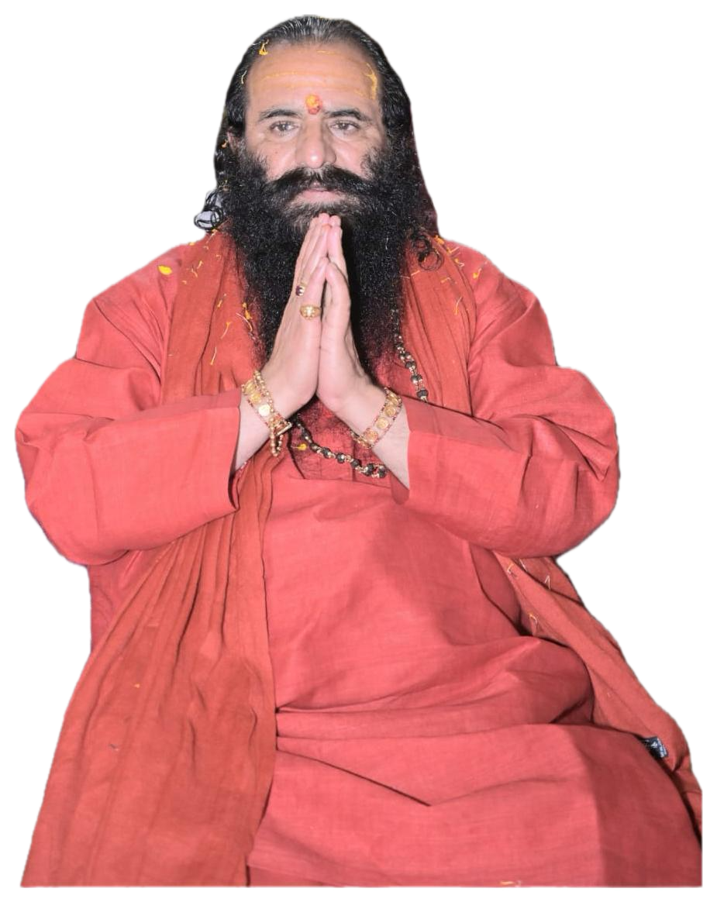

आदि शंकराचार्य की महान दशनामी परंपरा से प्रेरित, पंचायती अखाड़ा श्री निरंजनी सदियों से सनातन धर्म की रक्षा, आध्यात्मिक चेतना के प्रसार, संत परंपरा के संरक्षण तथा मानव कल्याण के लिए समर्पित है।
सदियों की आध्यात्मिक परंपरा
स्वयंसेवकों का विशाल समूह
सनातन धर्म सेवा एवं संरक्षण

पंचायती अखाड़ा श्री निरंजनी , महान दार्शनिक एवं धर्मप्रवर्तक आदि शंकराचार्य द्वारा स्थापित दशनामी संप्रदाय की एक अत्यंत प्राचीन, तेजस्वी और प्रतिष्ठित शाखा है। इस अखाड़े की स्थापना विक्रम संवत १४२९ (ईस्वी १४७२) में हुई थी।

आदि गुरु शंकराचार्य द्वारा स्थापित दशनामी संन्यास परंपरा का संरक्षण एवं संवर्धन।
सनातन धर्म के प्रचार, आध्यात्मिक जागरण एवं जनकल्याण के लिए निरंतर समर्पित।

आदि गुरु शंकराचार्य की दशनामी परंपरा का पालन करते हुए गुरु-शिष्य परंपरा का संरक्षण एवं संवर्धन।

कुंभ मेला, शाही स्नान एवं अन्य धार्मिक आयोजनों में अखाड़े की गौरवशाली सहभागिता।
सनातन संस्कृति का प्रचार-प्रसार, व्याख्यानमालाएं एवं धार्मिक शिक्षा कार्यक्रम।
श्री गुरु निरंजन देव की पावन परंपरा में स्थापित श्री पंचायती अखाड़ा श्री निरंजनी, सनातन वैदिक परंपरा एवं दशनामी संन्यास परंपरा का अनुसरण करता है। इस परंपरा में गुरु-शिष्य संबंध, आध्यात्मिक साधना तथा धर्म संरक्षण को सर्वोच्च स्थान प्राप्त है।
वर्तमान आचार्य गुरु

निरंजन देव स्तुति एवं गुरु परंपरा के माध्यम से आध्यात्मिक साधना और गुरु-भक्ति का मार्ग।
आदि गुरु शंकराचार्य से चली आ रही दशनामी संन्यास परंपरा एवं वर्तमान आचार्य गुरु की गौरवशाली परंपरा.
हरिद्वार, प्रयाग, उज्जैन एवं नासिक कुंभ पर्व का आध्यात्मिक महत्व एवं अखाड़े की गौरवशाली परंपरा।
श्री पंचायती निरंजनी अखाड़े की 18 मढ़ियाँ तथा भारतभर में स्थापित आध्यात्मिक केंद्र।


आचार्य महामण्डलेश्वर
दशनामी संन्यास परंपरा

श्री महंत रविन्द्रपुरी महाराज, पंचायती अखाड़ा श्री निरंजनी के सचिव एवं मनसा देवी मंदिर ट्रस्ट, हरिद्वार के अध्यक्ष हैं। गुरु परंपरा, सनातन धर्म के संरक्षण तथा आध्यात्मिक परंपराओं के संवर्धन में उनका महत्वपूर्ण योगदान है। उनके मार्गदर्शन में अखाड़ा अपनी प्राचीन परंपराओं, धार्मिक आयोजनों एवं आध्यात्मिक मूल्यों को आगे बढ़ाने के लिए निरंतर कार्यरत है।
भारत की समृद्ध आध्यात्मिक परंपरा में, दशनामी संन्यास अखाड़े महत्वपूर्ण भूमिका निभाते हैं। ये अखाड़े हजारों वर्षों से सनातन धर्म के मूल्यों, दर्शनों और परंपराओं को संरक्षण और संवर्धन प्रदान कर रहे हैं।
दशनामी शैव संन्यास परंपरा के प्रमुख एवं प्रतिष्ठित अखाड़ों में से एक। यह अखाड़ा गुरु-शिष्य परंपरा, वैदिक ज्ञान, तप, साधना तथा सनातन धर्म के संरक्षण के लिए समर्पित है। कुंभ पर्व में इसकी विशिष्ट भूमिका एवं शाही स्नान की गौरवशाली परंपरा है।

शैव संन्यासी परंपरा का एक प्रतिष्ठित अखाड़ा, जो साधना, गुरु-परंपरा तथा सनातन धर्म की सेवा के लिए समर्पित है। इसके संन्यासी आध्यात्मिक जीवन एवं वैदिक मूल्यों के प्रचार में सक्रिय रहते हैं।
वैदिक यज्ञ, तप, ब्रह्मचर्य एवं आध्यात्मिक साधना की परंपरा से जुड़ा दशनामी अखाड़ा। यह त्याग, अनुशासन एवं ज्ञान पर विशेष बल देता है।
शैव अखाड़े
वैष्णव अखाड़े
उदासीन अखाड़े
निर्मल अखाड़ा
कुल मान्यता प्राप्त अखाड़े


Based on 2500+ reviews
1) श्री पंच निरंजनी अखाड़ा
2) श्री पंच आनंद अखाड़ा
3) श्री पंच आवाहन अखाड़ा
4) श्री पंच अटल अखाड़ा
5) श्री पंच निर्वाणी अखाड़ा
6) श्री पंच अग्नि अखाड़ा
7) श्री पंच जूना अखाड़ा.
श्री पंचायती निरंजनी अखाड़े के अंतर्गत 18 मढ़ियाँ हैं।
1) अहं ब्रह्मास्मि
2) अयमात्मा ब्रह्म
3) तत्त्वमसि
4) प्रज्ञानं ब्रह्म
कुंभ पर्व चार स्थानों पर आयोजित होता है—
1) हरिद्वार
2) प्रयाग
3) उज्जैन
4) नासिक
परमहंस परिव्राजकाचार्य श्रीमद् ब्रह्मनिष्ठ पूज्यपाद श्री निरंजन पीठाधीश्वर श्री श्री 1008 आचार्य महामण्डलेश्वर स्वामी श्री कैलाशानन्द गिरि जी महाराज।
आदि शंकराचार्य द्वारा स्थापित दशनामी संन्यास परंपरा भारतीय आध्यात्मिक जीवन, वैदिक ज्ञान एवं सन्यास धर्म की आधारशिला है।
भारतीय संत परंपरा में अखाड़ों की स्थापना धर्म रक्षा, आध्यात्मिक साधना तथा वैदिक संस्कृति के संरक्षण के उद्देश्य से हुई।
गुरु से शिष्य तक ज्ञान, तप, त्याग और धर्म की परंपरा निरंतर प्रवाहित होती रही है, जो अखाड़े की मूल पहचान है।